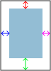

▲
Paper selection / Type area
Paper
--Choose an option--
A4
A5
A6
Orient
--Choose an option--
Landscape
Portrait
Type area
--Choose an option--
Golden ratio
Customize
Preset
--Choose an option--
Narrow
Moderate
Normal
Wide
Margins

Modify
Reset
▲
Columns / grid modules
Col num
Col gap
Grid num
Grid gap
▲
Typography settings
Line height
Cap height
Message box
Calculate
Adjust
Generate